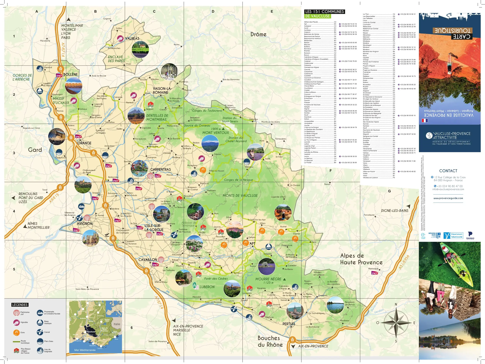
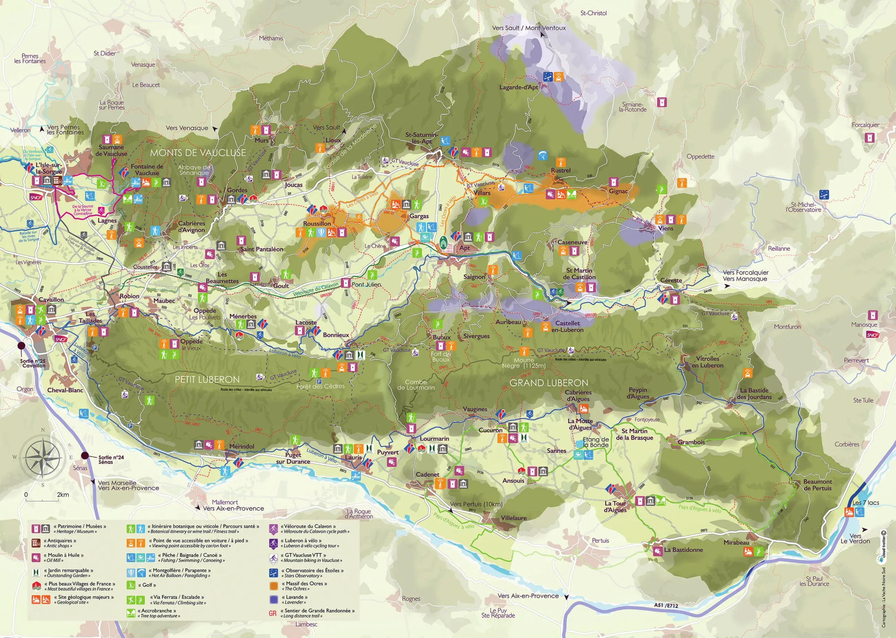
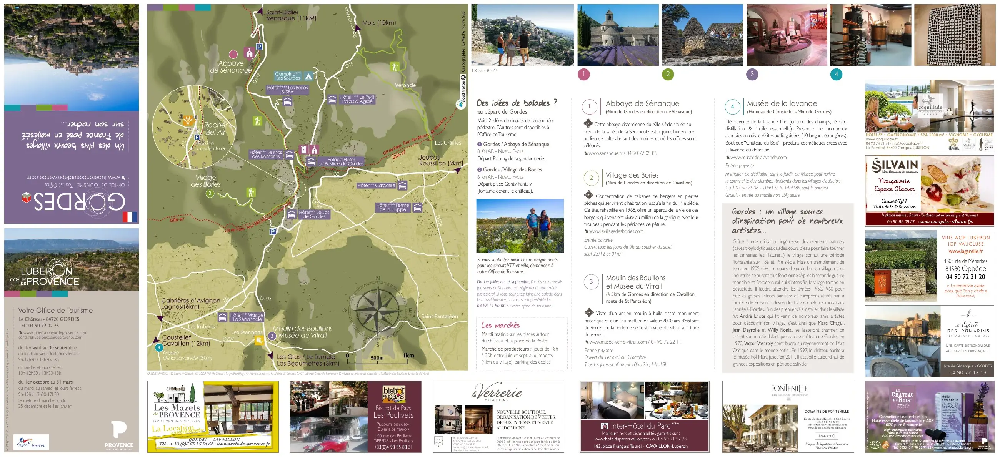
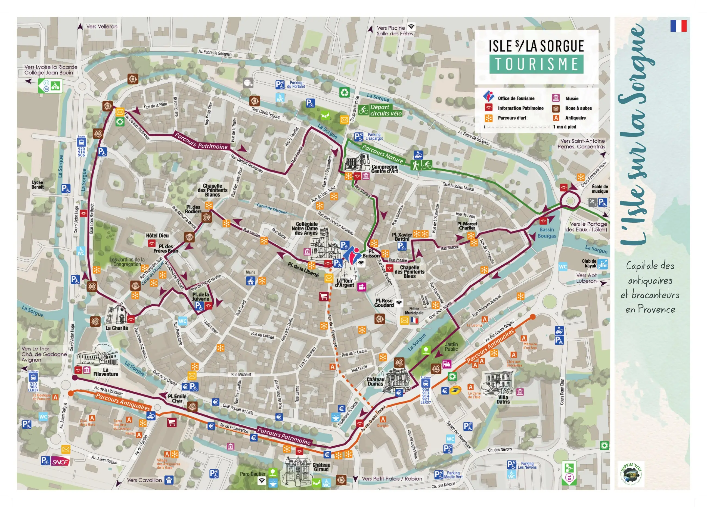
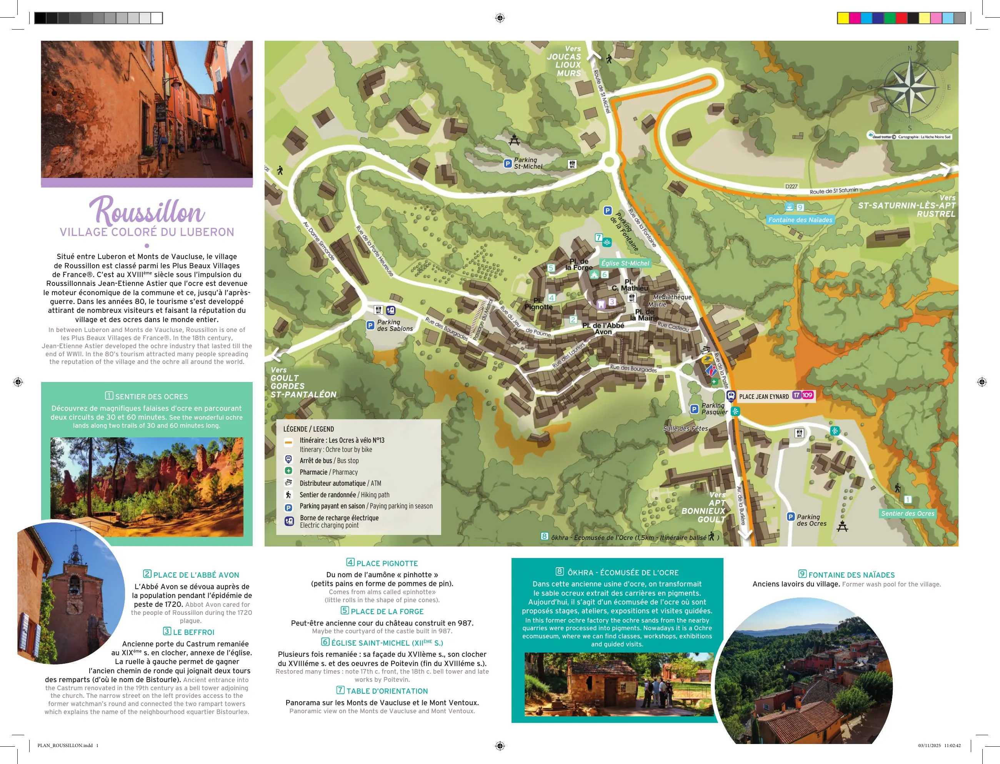
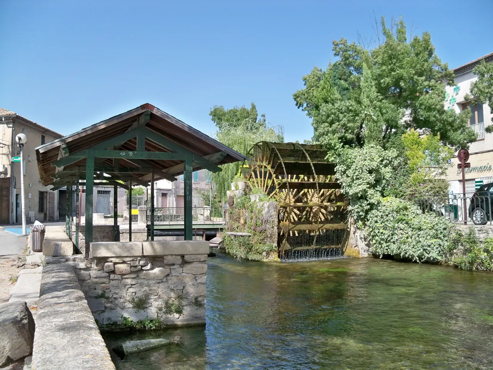
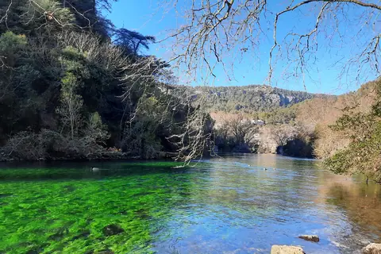

{kind=link}
.jpg){kind=link}

Abbaye de Sénanque
Gordes 북쪽 좁은 계곡의 12세기 Cistercian 수도원. 화려함보다 절제된 로마네스크 건축과 침묵의 공간이 핵심이다.

Luberon에서는 Gordes에 1박하며 서로 다른 풍경과 돌빛을 가진 마을을 연결한다. Day 17(9/14)의 Roussillon 오크르와 Gordes 체크인·결혼기념일 저녁, Day 18(9/15) 아침의 화요시장과 Sénanque·L'Isle-sur-la-Sorgue 경유가 이 구간의 정체성을 만든다. Lourmarin은 Aix 체류 중(9/13 오후)에 이미 다녀온다.
Bonnieux·Lacoste·Ménerbes·Goult는 이번 일정에서 제외한다. 짧은 1박이므로 Roussillon 오커길, Gordes 체크인·저녁, Sénanque 관람 시간을 다른 것과 바꾸지 않는다.
9월 중순은 라벤더보다 포도와 무화과, 수확기의 농촌 풍경을 보는 시기다. 유명마을을 모두 돌기보다 숙소로 돌아오는 시간을 충분히 남긴다.

| 날짜 | 핵심 일정 |
|---|---|
| 9/14 월 | Aix 체크아웃 · Roussillon·Sentier des Ocres·점심 · Gordes 16:00 체크인 · La Trinquette 결혼기념일 저녁 |
| 9/15 화 | Gordes 화요시장 · 체크아웃 · Abbaye de Sénanque(오전) · L'Isle-sur-la-Sorgue·점심 · Avignon 체크인 (상세는 Avignon 장) |
상세 시각, 주차, 식사와 선택 일정은 각 날짜의 Day 페이지에서 확인한다.
현지 관광안내소가 종이로 나눠 주는 지도다. 목적지를 찍어 찾아가는 지도가 아니라, 이 고장에서 무엇이 유명하고 서로 얼마나 떨어져 있는지를 한눈에 보여 주는 쪽이다. 눌러서 크게 열면 확대된다 — 인터넷이 끊겨도 열린다.

고르드·루시용·세낭크 수도원·리슬쉬르라소르그·메네르브·루르마랭이 원형 사진으로 박혀 있다. '프랑스에서 가장 아름다운 마을' 표식과 오크르 표식이 따로 있어 어느 마을을 넣고 뺄지 고르기 쉽다.
저작권 · © Vaucluse Provence Attractivité. All rights reserved. 권리자: Vaucluse Provence Attractivité
공식 배포 파일에서 지도 면만 뽑아 해상도를 낮춰 비상업적 개인 여행 참고용으로 수록한다. 권리자·발행처·판본·원본 주소를 함께 표시하고, 요청이 있으면 내린다.

뤼베롱 산괴 전체와 그 위에 얹힌 마을이 전부 들어간다. 마을에서 마을로 넘어가는 하루를 짤 때 이 한 장이면 된다 — 보클뤼즈 광역도보다 축척이 커서 도로가 읽힌다.
저작권 · © Destination Luberon. All rights reserved. 권리자: Destination Luberon
공식 배포 파일에서 지도 면만 뽑아 해상도를 낮춰 비상업적 개인 여행 참고용으로 수록한다. 권리자·발행처·판본·원본 주소를 함께 표시하고, 요청이 있으면 내린다.

절벽에 얹힌 마을이라 주차장에서 성까지 어느 길로 오르는지가 문제가 된다. 그 길과 세낭크 수도원·보리 마을로 나가는 방향이 표시돼 있다.
저작권 · © Office de Tourisme de Gordes. All rights reserved. 권리자: Office de Tourisme de Gordes
공식 배포 파일에서 지도 면만 뽑아 해상도를 낮춰 비상업적 개인 여행 참고용으로 수록한다. 권리자·발행처·판본·원본 주소를 함께 표시하고, 요청이 있으면 내린다.

색깔로 나눈 산책로 세 개 — 유산·자연·골동품 — 가 그려져 있다. 물레방아(roue à aubes) 위치와 골동품상 구역, 빌라 다트리스가 표시되고 축척이 '도보 1분' 단위다. 장서는 날 이 지도가 곧 동선이다.
저작권 · © L'Isle sur la Sorgue Tourisme. All rights reserved. 권리자: L'Isle sur la Sorgue Tourisme
공식 배포 파일에서 지도 면만 뽑아 해상도를 낮춰 비상업적 개인 여행 참고용으로 수록한다. 권리자·발행처·판본·원본 주소를 함께 표시하고, 요청이 있으면 내린다.

번호 9개 — 오크르 산책로(Sentier des Ocres), 종탑, 생미셸 성당, 방위표, ôkhra 오크르 생태박물관, 나이아드 분수. 마을 자체는 작아서 실제 관심사는 오크르 산책로 입구가 어디냐인데 그게 1번이다.
저작권 · © Office de Tourisme Pays d'Apt Luberon. All rights reserved. 권리자: Office de Tourisme Pays d'Apt Luberon
공식 배포 파일에서 지도 면만 뽑아 해상도를 낮춰 비상업적 개인 여행 참고용으로 수록한다. 권리자·발행처·판본·원본 주소를 함께 표시하고, 요청이 있으면 내린다.
Gordes 북쪽 좁은 계곡의 12세기 Cistercian 수도원. 화려함보다 절제된 로마네스크 건축과 침묵의 공간이 핵심이다.

바위 언덕 위에 석회암 집들이 층층이 매달린 Luberon의 대표 이미지. 진입도로 파노라마와 해질 무렵의 돌빛이 핵심이다.

뤼베롱 남쪽 기슭의 평지형 마을. 카페·상점·갤러리와 르네상스 성이 어우러진 우아한 생활형 프로방스다.

Sorgue 강의 여러 물길이 구시가를 감싸고 오래된 물레방아가 남아 있어 ‘Comtadine Venice’라 불리는 물과 생활의 도시.

붉은색·주황색·노란색 오크르가 절벽과 건물에 이어지는 Luberon의 색채 중심지. 마을과 Sentier des Ocres를 함께 봐야 완성된다.

Petit Luberon 북사면을 따라 층층이 올라가는 언덕마을. 정상의 오래된 교회에서 Lacoste와 Calavon 계곡을 바라보는 전망이 핵심이다.

뤼베롱 현지 농부들이 직접 재배하고 만든 신선 농산물과 특산품을 판매하는 생산자 직거래 일요 시장. 이번 Day 17–18 일정에는 넣지 않은 지역 참고 Place다.

대형 관광버스가 닿지 않아 뤼베롱에서 가장 고요하고 평화로운 '숨겨진 보석' 마을. 언덕 정상의 17세기 예루살렘 풍차(Moulin de Jérusalem)와 현지인들의 정겨운 일상이 살아있는 골목길.

Bonnieux 맞은편 언덕에 붙은 작은 석조마을. 중세 성벽 골목과 Marquis de Sade로 알려진 성터가 마을의 성격을 만든다.

Sorgue 강이 거대한 석회암 절벽 아래에서 솟아나는 수원지 마을. L'Isle와 묶으면 ‘물의 Provence’라는 하루 테마가 완성된다.

피터 메일의 소설 『프로방스에서의 1년』의 무대이자 피카소의 뮤즈 도라 마르가 살았던 길고 좁은 능선(Ridge) 위의 성채 마을. 뤼베롱 와인과 트러플의 중심지이자 고즈넉한 예술 마을.

19세기 주민들이 떠난 뒤 시간 속에 멈춰버린 뤼베롱의 신비로운 옛 중세 요새 마을. 숲과 덩굴에 뒤덮인 12세기 성채 폐허와 복원된 노트르담 달리동(Notre-Dame-d'Alidon) 성당.

시멘트나 모르타르 없이 납작한 석회암 조각만을 층층이 쌓아 올린 20여 채의 건식 석조(Dry-stone) 원추형 오두막 군락. 프로방스 농민들의 지혜가 담긴 야외 민속 건축 박물관.
프로방스 내륙의 식문화는 생산자 직거래 시장과 신선한 제철 식재료를 중심으로 한다.
프로방스에서는 지역 로제 와인도 대표적인 식문화 요소다. 운전하는 날에는 마시지 않고 저녁 식사 때 선택한다.
Gordes 1박(9/14 16:00 체크인 – 9/15 체크아웃) · 확정 숙소 104 Rte des Moines — Sénanque로 이어지는 진입로 권역이다. 마을 중심은 도보권이고, 이동은 렌터카가 정본이며 도착 즉시 주차·야간 출입방법을 확인한다.
확정 숙소는 104 Rte des Moines, 84220 Gordes — Sénanque로 이어지는 Route des Moines 진입로 권역의 1박 거점이다. 이동은 렌터카가 기본이고 각 마을은 외곽 주차 후 걷는다.
첫날(9/14) Roussillon 오크르길과 점심 뒤 16:00 Gordes 체크인, 마을 산책, La Trinquette 결혼기념일 저녁을 둔다. 다음 날(9/15) 아침 화요시장을 본 뒤 체크아웃하고 Sénanque(오전 창)와 L'Isle-sur-la-Sorgue를 거쳐 Avignon으로 이동한다.
숙소에 도착하면 주차 위치와 야간 출입방법을 먼저 확인한다.
늦은 귀가 — Day 18 시장·체크아웃이 늦어지면 Sénanque 내부를 빼고 외관·계곡으로 대체한다. L'Isle은 점심+물레방아 축으로 줄인다.
Day 17(9/14) Aix 체크아웃 뒤 Roussillon을 거쳐 Gordes로 들어간다. 늦어지면 전망대 정차를 생략하고 16:00 체크인과 19:00 저녁을 지킨다.
9.14(월) · Day 17 · Aix · Roussillon · GordesDay 18(9/15) 화요시장 후 체크아웃하고 Sénanque(오전 창)와 L'Isle-sur-la-Sorgue를 거쳐 Avignon에 체크인한다.
9.15(화) · Day 18 · Gordes · L'Isle-sur-la-Sorgue · Avignon차량 장애 때 Gordes 한 축으로 일정을 줄이는 비상안
Day 18 Avignon 이동을 단순화할 때 출발지에 맞춰 검토하는 비상안
즉흥 대체편이 아니며 예약이 성립한 경우에만 사용
Gordes와 여러 마을을 연결하는 일정은 렌터카가 기본이다. 대중교통으로 같은 다중 마을 동선을 재현하지 않는다.
석조마을 내부는 길이 좁고 보행자 중심이므로 골목 안으로 차량을 진입시키지 않는다. 마을 입구의 공식 외곽 주차장에 차를 세우고 도보로 진입한다.
Day 17(9/14)은 16:00 체크인 뒤 마을 산책과 저녁이 전부다. 결혼기념일 저녁(19:00)을 위협하는 추가 일정을 붙이지 않는다.
Day 18(9/15 화) 화요시장 후 체크아웃하고 Sénanque와 L'Isle-sur-la-Sorgue를 거쳐 Avignon으로 이동한다. Saint-Rémy·Les Baux는 다음 날(Day 19) Avignon 기점 당일치기다.
렌터카가 정본이다. 차량 장애 때 915·917·907 가운데 실제 출발지와 맞는 한 축만 검토하며, 예약형 989와 99xx 통학 노선을 일반 방문객 노선으로 혼동하지 않는다.